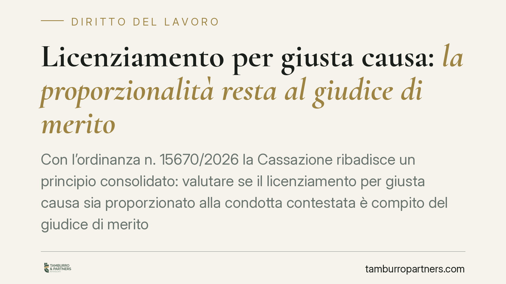

Licenziamento per giusta causa: la proporzionalità resta al giudice di merito
Con l'ordinanza n. 15670/2026 la Cassazione ribadisce un principio consolidato: valutare se il licenziamento per giusta causa sia proporzionato alla condotta contestata è compito del giudice di merito. La Suprema Corte può intervenire solo davanti a vizi motivazionali gravi. Una distinzione che pesa sulle strategie difensive di datori e lavoratori.

Il caso e il principio
La Sezione Lavoro della Cassazione, con l'ordinanza n. 15670 del 22 maggio 2026, torna su un nodo classico del contenzioso sul licenziamento: chi decide se la sanzione espulsiva è proporzionata alla mancanza commessa dal lavoratore?
La risposta della Corte è netta. Il giudizio di proporzionalità è un accertamento di fatto, riservato al giudice di merito (Tribunale e Corte d'Appello). Il controllo della Cassazione resta confinato al piano della legittimità: può censurare la decisione solo se la motivazione è assente, contraddittoria o manifestamente illogica.
Inquadramento normativo
Il riferimento è l'art. 2119 del codice civile, che consente il recesso senza preavviso quando si verifica "una causa che non consenta la prosecuzione, anche provvisoria, del rapporto". La norma usa una formula elastica: non elenca le condotte che integrano la giusta causa, ma affida al giudice il compito di riempirla di contenuto caso per caso.
Questa apertura richiede un doppio passaggio valutativo. Primo: accertare la gravità oggettiva del fatto. Secondo: verificare se quel fatto, anche alla luce dell'elemento soggettivo (intenzionalità, colpa, contesto), sia tale da spezzare in modo irrimediabile il vincolo fiduciario tra le parti.
È proprio questa seconda operazione — il bilanciamento tra condotta e sanzione — che la Cassazione considera insindacabile nel merito. Il giudice di legittimità non rivaluta i fatti né sostituisce il proprio apprezzamento a quello del giudice territoriale. Verifica solo che il ragionamento sia stato compiuto e sia logicamente sostenibile.
Cosa significa in concreto
La pronuncia ridimensiona le aspettative di chi conta sulla Cassazione come "terzo grado" per ribaltare la valutazione di merito. Non lo è. Chi ha perso in appello sulla proporzionalità non può limitarsi a riproporre la propria lettura dei fatti: deve individuare un vizio strutturale della motivazione.
Per il datore di lavoro questo significa che la partita si gioca quasi interamente nei primi due gradi. Se la contestazione disciplinare è imprecisa, se manca la prova documentale della condotta, se il licenziamento appare sproporzionato rispetto alla mancanza, difficilmente la Cassazione correggerà la decisione sfavorevole.
Per il lavoratore vale il rovescio: la solidità della difesa va costruita subito, curando l'istruttoria e valorizzando ogni elemento — anzianità di servizio, assenza di precedenti disciplinari, entità del danno effettivo — che incida sul giudizio di proporzionalità.
Un dato pratico spesso sottovalutato: il codice disciplinare aziendale e la contrattazione collettiva orientano ma non vincolano il giudice. Anche se il CCNL prevede il licenziamento per una certa condotta, il giudice deve comunque verificare la proporzionalità nel caso concreto. E viceversa: una sanzione conservativa prevista dal contratto può escludere la legittimità del recesso.
Cosa fare in concreto
- Datori di lavoro: curate la contestazione disciplinare. Descrivete i fatti in modo specifico, circostanziato e tempestivo. Una contestazione generica indebolisce l'intero procedimento.
- Documentate la condotta. Raccogliete e conservate le prove prima di procedere al licenziamento: la valutazione di proporzionalità si fonda sui fatti provati, non su quelli allegati.
- Lavoratori: agite sul merito fin dal primo grado. Introducete subito tutti gli elementi che riducono la gravità della condotta o attenuano la lesione del vincolo fiduciario.
- Verificate CCNL e codice disciplinare. Controllate se la condotta contestata sia tipizzata come giusta causa o come mancanza sanzionabile in via conservativa: è un argomento decisivo.
- Impostate correttamente l'eventuale ricorso in Cassazione. Non riproponete la ricostruzione dei fatti: individuate un vizio motivazionale grave, unico varco per il sindacato di legittimità.
La lezione dell'ordinanza è chiara. Il contenzioso sul licenziamento si vince o si perde nel merito. Consigliamo di investire risorse difensive dove contano davvero: nella fase istruttoria e nella costruzione della motivazione, non nella speranza di un ribaltamento in ultima istanza.
---
*Contributo informativo a cura di Tamburro & Partners - Avv. Giuseppe Tamburro. Non costituisce parere legale.*
Ogni storia di lavoro ha i suoi tempi.
Se gestisci HR e vuoi un confronto su contenzioso, ispezioni o licenziamenti, scrivi allo studio. Ti rispondiamo entro un giorno lavorativo.